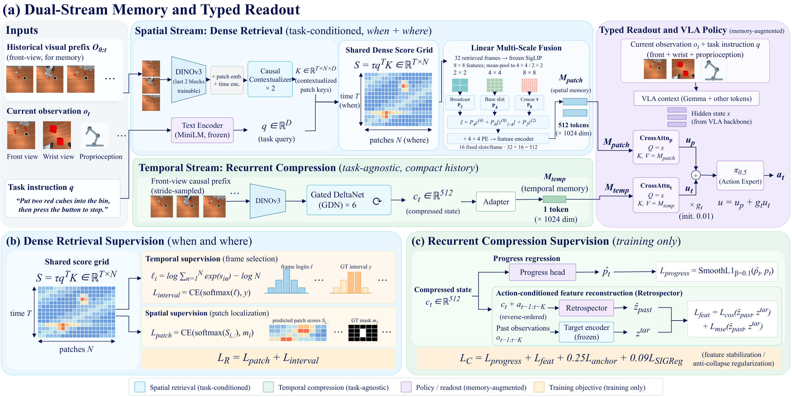
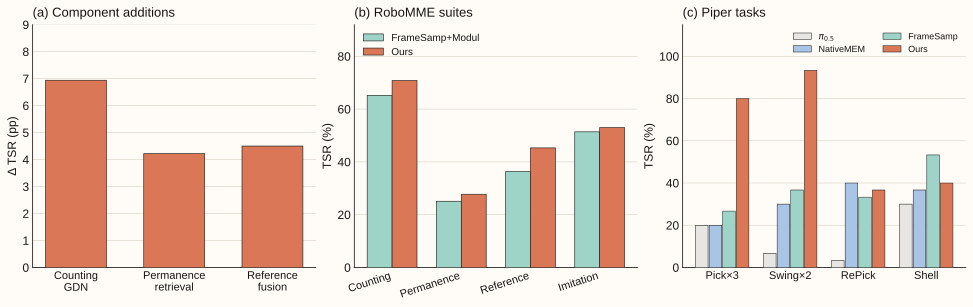
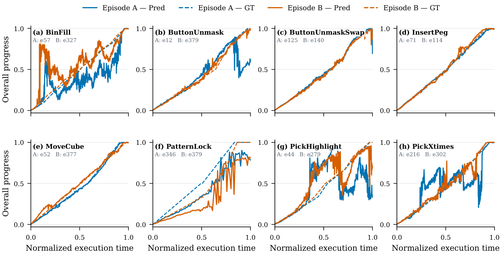
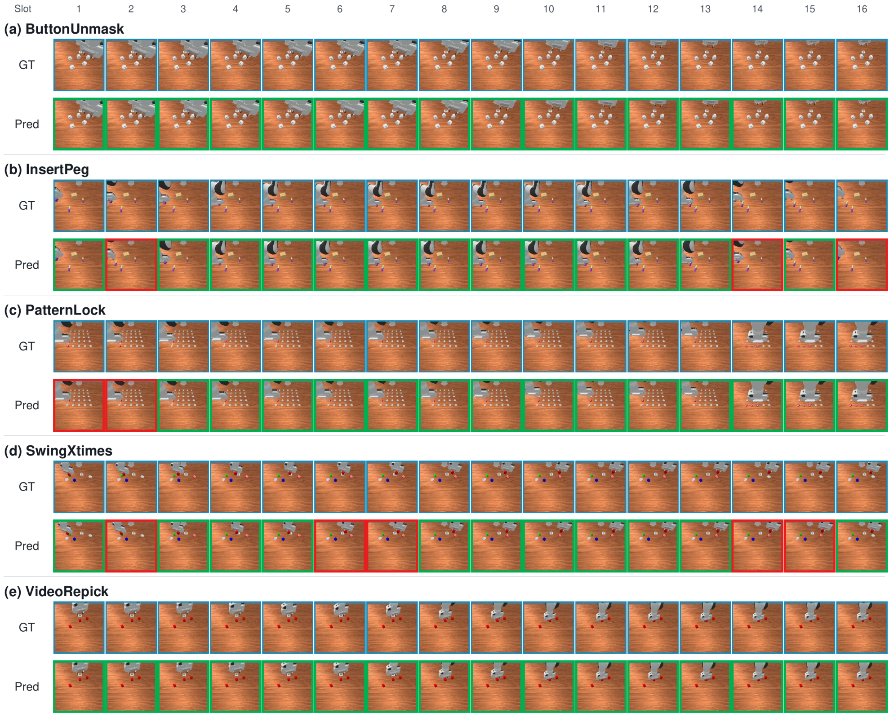
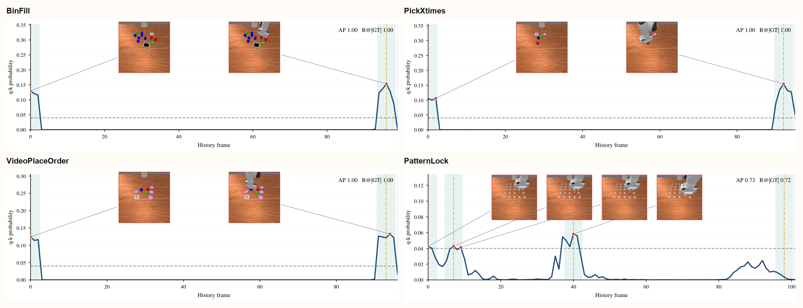

ICRA 2027
Dual-Stream Memory for Vision-Language-Action Policies
Recurrent execution context stays in one temporal token. Task-conditioned retrieval keeps historical images above a relevance threshold. Linear fusion represents each retained frame in sixteen spatial tokens.
49.22% RoboMME mean TSR
+4.71 pp vs FrameSamp
62.5% Piper mean TSR
14/16 tasks improved
Under double-anonymous review
PAPER
Abstract
Memory-dependent manipulation requires tracking execution progress while recovering visual evidence that is no longer visible. We present dual-stream memory for vision-language-action policies, separating recurrent execution context from task-conditioned access to historical images. A task-agnostic Gated DeltaNet compresses visual history into one temporal token. A retriever retains frames above a fixed relevance threshold, while linear multi-scale fusion represents each retained frame in sixteen spatial tokens. The two streams are pretrained independently and then jointly trained with the policy. The complete model achieves 49.22% mean success across sixteen RoboMME tasks, compared with 44.51% for the published FrameSamp+Modul baseline. Gains span all four task suites, with improvements on fourteen of sixteen tasks. Component comparisons examine the roles of execution context, frame relevance, and spatial detail. On four Piper tasks, mean success reaches 62.5%, compared with 37.5% for FrameSamp+Modul, with the largest gains on repeated-action counting. These results support complementary memory representations while identifying task-dependent limits in recovering and using historical evidence.
ARCHITECTURE
Two streams, one policy
Only retrieval is conditioned on the task text. Compression runs on a stride-sampled visual prefix.
Spatial stream
16 / frame
Threshold retrieval and linear fusion
The retriever scores every historical frame and keeps those whose LSE logit exceeds 0.6. Linear multi-scale fusion represents each retained frame with sixteen aligned SigLIP tokens. Memory length follows the evidence, not a fixed top-k.
Temporal stream
1 token
Gated DeltaNet compression
A six-layer Gated DeltaNet compresses a stride-3 visual prefix into ct. Progress prediction and action-conditioned reconstruction supervise this state. The policy reads it as one temporal token after the auxiliary heads are removed.
EVIDENCE
Results
The complete model is 49.22% mean TSR on sixteen RoboMME tasks, 4.71 points above FrameSamp+Modul. Component additions remain descriptive comparisons with the published baseline.
The complete model reached 49.22% mean TSR on RoboMME versus 44.51% for FrameSamp+Modul. All four suite means increased; fourteen of sixteen tasks improved. VideoUnmaskSwap and PatternLock declined. Combined gains do not simply add across components. On Piper, mean TSR is 62.5% versus 37.5%, with the largest gains on repeated-action counting; Shell declined from 53.3% to 40.0%.

| Component / suite | Base | Addition | Δ (pp) |
|---|---|---|---|
| GDN / Counting | 65.22 | 72.17±4.25 | +6.94 |
| Retrieval / Permanence | 25.11 | 29.33±0.76 | +4.22 |
| Linear fusion / Reference | 36.33 | 40.83±3.62 | +4.50 |
Suite means when each component is added to FrameSamp+Modul. TSR (%) averages three evaluation seeds. Δ is computed before rounding. FrameSamp+Modul values are the published RoboMME reference.
| Suite | FrameSamp+Modul | Ours | Δ (pp) |
|---|---|---|---|
| Counting | 65.22 | 70.83 | +5.61 |
| Permanence | 25.11 | 27.75 | +2.64 |
| Reference | 36.33 | 45.31 | +8.98 |
| Imitation | 51.39 | 53.00 | +1.61 |
| Overall | 44.51 | 49.22 | +4.71 |
Complete-model RoboMME suite means versus the published FrameSamp+Modul reference. Means weight tasks equally. Δ is computed from the reported task means.
| Method | Pick×3 | Swing×2 | RePick | Shell | Avg. |
|---|---|---|---|---|---|
| π0.5 base | 20.0 | 6.7 | 3.3 | 30.0 | 15.0 |
| NativeMEM | 20.0 | 30.0 | 40.0 | 36.7 | 31.7 |
| FrameSamp+Modul | 26.7 | 36.7 | 33.3 | 53.3 | 37.5 |
| Ours | 80.0 | 93.3 | 36.7 | 40.0 | 62.5 |
Piper TSR (%): 30 rollouts per task and method. Avg. weights the four tasks equally. The largest gains are on Pick×3 and Swing×2. Shell declined from 53.3% to 40.0%.



PHYSICAL
Piper rollouts
Four tasks and four methods, sixteen clips. Drop mp4 files at the paths in each slot. The layout stays when the videos arrive.
π0.5
NativeMEM
FrameSamp+Modul
Ours
Pick×3
π0.520.0% TSRassets/videos/pickx3_pi05.mp4
NativeMEM20.0% TSRassets/videos/pickx3_nativemem.mp4
FrameSamp26.7% TSRassets/videos/pickx3_framesamp.mp4
Ours80.0% TSRassets/videos/pickx3_ours.mp4
Swing×2
π0.56.7% TSRassets/videos/swingx2_pi05.mp4
NativeMEM30.0% TSRassets/videos/swingx2_nativemem.mp4
FrameSamp36.7% TSRassets/videos/swingx2_framesamp.mp4
Ours93.3% TSRassets/videos/swingx2_ours.mp4
RePick
π0.53.3% TSRassets/videos/repick_pi05.mp4
NativeMEM40.0% TSRassets/videos/repick_nativemem.mp4
FrameSamp33.3% TSRassets/videos/repick_framesamp.mp4
Ours36.7% TSRassets/videos/repick_ours.mp4
Shell
π0.530.0% TSRassets/videos/shell_pi05.mp4
NativeMEM36.7% TSRassets/videos/shell_nativemem.mp4
FrameSamp53.3% TSRassets/videos/shell_framesamp.mp4
Ours40.0% TSRassets/videos/shell_ours.mp4
CITE
BibTeX
@inproceedings{anonymous2027dualstream,
title={Dual-Stream Memory for Vision-Language-Action Policies},
year={2027},
note={Under double-anonymous review}
}